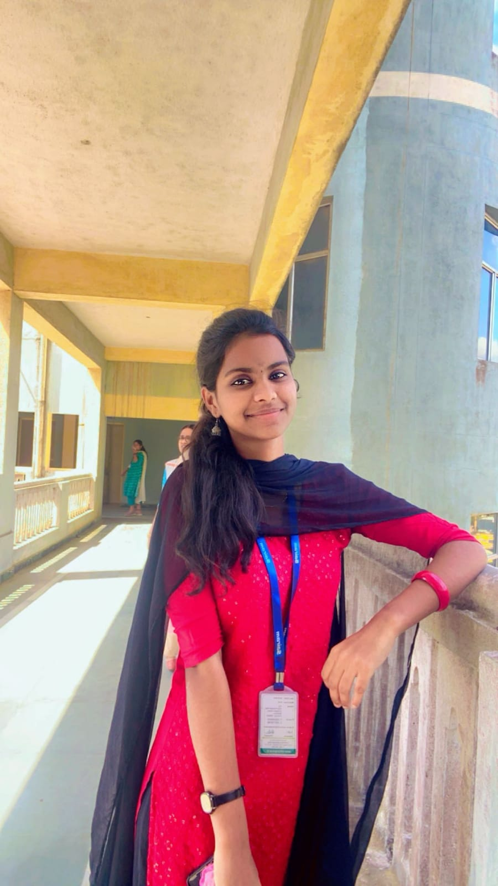

AJITHA GLORIA A
A Juvenile Engineer pursuing B.E
- Student at Sri Sairam engineering College
- Computer Science and engineering
- 2022-2026
ABOUT ME
Hello!I am Ajitha Gloria, currently pursuing Computer Science Engineering at Sri Sairam Engineering College. Beyond my academic pursuits, I focus more on a balanced and fulfilled life. I believe in the power of positivity and actively seek joy in every aspect of my journey. Outside the world of coding and algorithms, I find happiness in simple pleasures, whether by taking care of myself, or spending quality time with friends and family. I firmly believe that a happy and healthy mind contributes significantly to personal and professional success. This philosophy made me excel in my academic success and also it creates joy in my beautiful journey called life.
EDUCATION
SSLC
Christ king Matric.Hr.Sec School,Tambaram
Year:2020
Percentage:96.5%
Higher Secondary
Christ king Matric.Hr.Sec School,Tambaram
Year:2022
Percentage:96.5%
UnderGraduate
Sri Sairam Engineering College
Year:2022-2026
Current CGPA: 9.44
SKILLS
- C LANGUAGE
- HTML
- CSS
- MYSQL
- CANVA
- FIGMA
FIELD OF INTEREST
ARTIFICIAL INTELLIGENCE AND MACHINE LEARNING
As an aspiring professional in the field of AIML (Artificial Intelligence Markup Language), I am at the beginning of my journey with a keen interest in mastering the intricacies of building intelligent conversational agents. Despite being a beginner, I have taken initial steps to understand and implement AIML in chatbot development. I am enthusiastic about learning and staying updated on the latest advancements in AIML and related technologies. Eager to apply my foundational knowledge in AIML, I am committed to continuous growth and contributing to the exciting developments in artificial intelligence. I am excited about the opportunity to expand my skills and make meaningful contributions to the AIML community and beyond.
CURRENT PROJECT IN AIML
In my current project, I am passionately engaged in developing an innovative solution aimed at bridging communication gaps for the hearing and speaking impaired. The project focuses on the generation of sign language from audio inputs, creating a valuable tool for individuals who rely on sign language for communication. Leveraging my skills in audio processing and machine learning, I am working on the development of a robust system that accurately translates spoken words into corresponding sign language gestures. Additionally, I am integrating this technology seamlessly into video conferencing applications, thereby fostering inclusivity in virtual communication environments.
To know more about me follow me on LinkedIn:click here